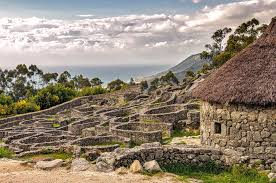

Monte de Santa Tecla o Santa Tegra, en gallego. Da igual cómo lo llames, pero ¡tienes que hacerle una visita! Esta montaña de 341 metros de altura se encuentra en el acogedor y colorido pueblito pesquero de A Guarda y es uno de los tesoros naturales más queridos de sus vecinos.
